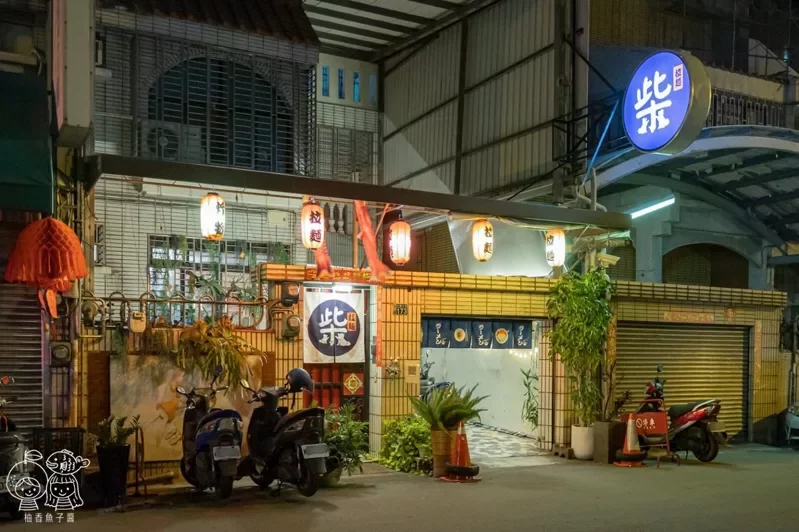
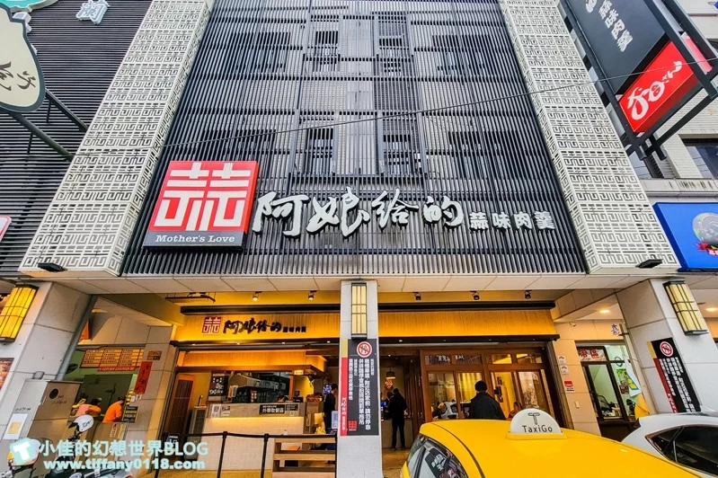

柴拉麵
這裡的道路不到非常寬敞，但門口好停放機車，開車的朋友可以選擇停在萬壽棒球場的附設地下停車場，
也能和我們一樣停在大墩十一街的收費停車場，走過來都不用三分鐘。
阿娘給的蒜味肉羹
連我這個不太愛吃蒜跟不吃肉羹的人也完全淪陷，是我非常喜歡的宜蘭在地小吃推薦。

三輪車手工麻糬
總是在台灣草莓季一開始就大器購入，大湖草莓，並特選飯店級的1號草莓～
| 圖片 | 標題 | 簡介 |
|---|---|---|
|  | 柴拉麵 |
柴拉麵就位在南屯大墩十街上，外觀像是一般的住宅，穿過院子才會走到店內， 這裡的道路不到非常寬敞，但門口好停放機車，開車的朋友可以選擇停在萬壽棒球場的附設地下停車場， 也能和我們一樣停在大墩十一街的收費停車場，走過來都不用三分鐘。 |
|  | 阿娘給的蒜味肉羹 |
阿娘給的蒜味肉羹環境更寬敞舒適，蒜味肉羹本身算味更濃郁，肉羹有調味過超好吃， 連我這個不太愛吃蒜跟不吃肉羹的人也完全淪陷，是我非常喜歡的宜蘭在地小吃推薦。 |
|
三輪車手工麻糬 |
冬季最正點的高雄草莓大福，絕對首推高雄左營的三輪車麻糬大福冰品啦！ 總是在台灣草莓季一開始就大器購入，大湖草莓，並特選飯店級的1號草莓～ |